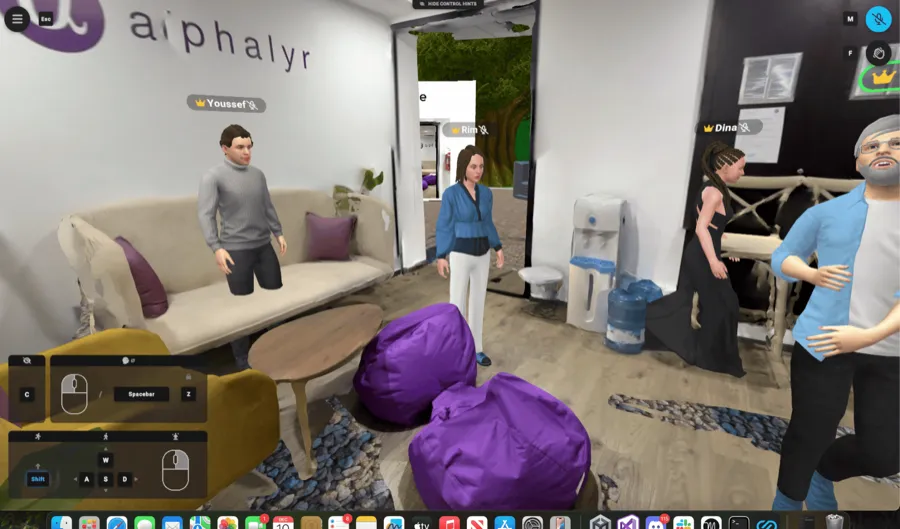
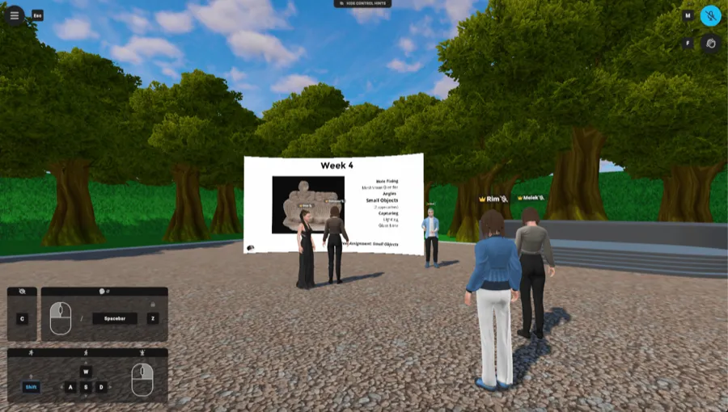
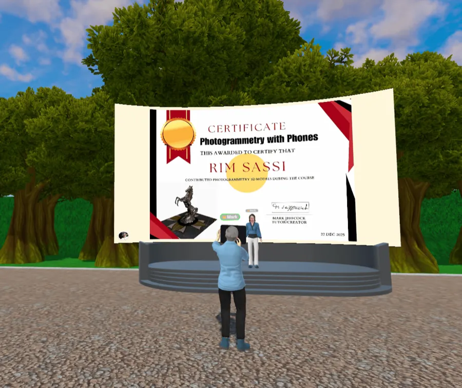

This 6-week online course introduces splats using smartphones, taught by Mark Jeffcock.
Participants will learn how to capture real-world objects using a phone, turn them into 3D models and Gaussian splats, and review scans together in an immersive learning environment.
The cohort meets once a week at 7PM Tunisia Time (2PM Eastern) for 1 hour, for 6 weeks. No prior experience is required. Attendance and engagement matter more than technical background.
Due to limited spots, we review applications holistically based on availability, background, and motivation. More details are shared with accepted participants.


